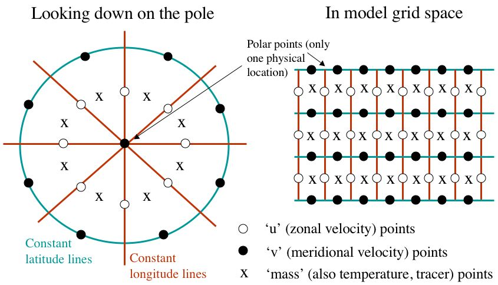

Model Modifications - from WRF to planetWRF
WRF was designed to be a terrestrial mesoscale and microscale model. To make it work as a global model and as a planetary model a number of changes were required. These changes are briefly described here. Details of the original NCAR WRF model are provided on the NCAR WRF model website.
Global changes required
Non-Conformal Grid Modification
WRF was built to use only conformal map projections, meaning that the map scale factors (which relate map projection distance to physical distance) are independent of direction. This meant that for each point on the grid, only a single map scale factor was needed, simplifying the equations and allowing some cancellation of terms. However, only conformal map projections could be used: polar stereographic, Lambert conformal, Mercator, and simplified/idealized square grid boxes, eliminating the possibility of using the model as a fully global single domain (no conformal grid can reach to both poles).
To generalize the model so that non-conformal map projections could be used, we needed to rewrite the equations with the full, separate x- and y-directional map scale factor components. The modifications allow any generalized map projection to be used, including 'rotated pole' (transverse projection) and stretched/zoomed grids, but our primary goal was to run using a simple cylindrical projection (evenly spaced in lat and lon).
Polar boundaries and filtering
A polar boundary condition is needed in the north-south direction. We have followed the convention for C-grid models used, for example, by the GSFC Aries model [Suarez and Takacs, 1993; Fox-Rabinovitz et al., 1997]. We take the polar point to be a C-grid v-stagger point (see below), with the value of the meridional velocity constantly equal to zero. Flux and gradient calculations across the pole are not allowed. This does not preclude advection of material across the pole: 'over the pole' advection is instead accomplished by zonal transport within the most poleward zone.

The convergence of the zonal grid points approaching the pole can present another well-known problem. The physical distancefor zonal advection of information decreases rapidly to zero at the pole, and determine the model time step needed to avoid instability in the horizontal direction (the Courant-Friedrichs-Lewy, or CFL, criteria). To be able to use longer timesteps (those suitable for more tropical latitudes) we have implemented polar Fourier filtering of the higher-frequency components of state variables. All grid points poleward of 60 degrees are filtered, with the cutoff frequency a function of the cosine of latitude. The column mass, horizontal winds, temperature and tracers (moisture, aerosols, chemicals, etc.) are filtered - this arrangement was found to yield the greatest stability.
Planetary changes required
Generalized Planetary Parameters and Timing Conventions
Planet-specific parameters such as orbital parameters, the relationship between SI seconds and model seconds (see below), reference pressure, gravity and gas constant are set in one model constants module, with the selection of a set of consistent planetary parameters a compilation-time option. The co-location of all model constants in one module makes setting them up for any arbitrary planet very straightforward.
The model assumes that one day is made up of 24 hours, each of which is composed of 60 minutes, in turn made up of 60 seconds. The model time step is externally defined in terms of these planetary time units, thus there is always an integer number of timesteps per day. However, the dynamics and physics routines are still integrated in MKS (SI) units, with the conversion from model-to-SI time made before calculating tendencies and physical quantities. The original WRF version uses the standard day-month-year calendar format. This convention is used to drive the solar radiation routines and to label model output. WRF uses routines from the standardized Earth System Modeling Framework (ESMF). We have converted versions of these routines to drive the model with user-specified orbital elements using the planetocentric solar longitude (Ls) date system (with Ls = 0 corresponding to northern hemisphere spring equinox and Ls = 90 to northern hemisphere summer solstice, etc.).
Parameterizations of sub-grid scale physical processes
A wide range of physics schemes are included in planetWRF.